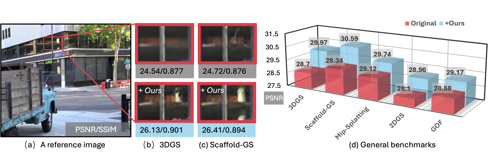
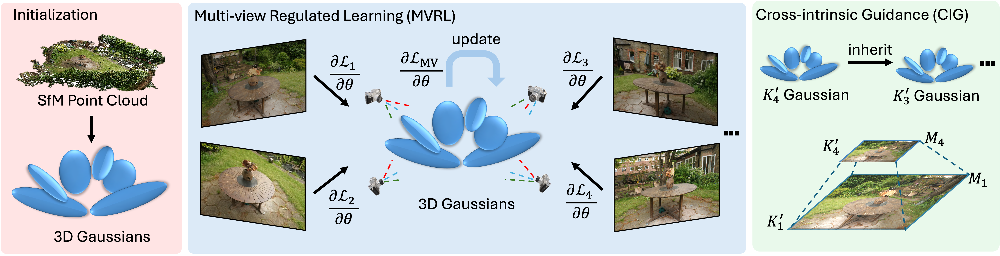
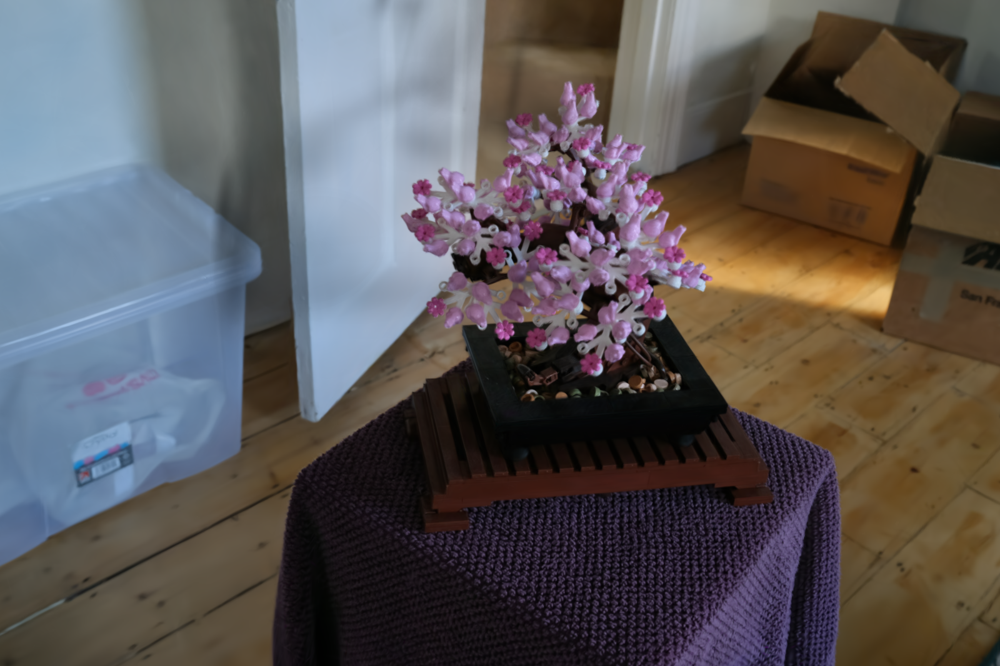
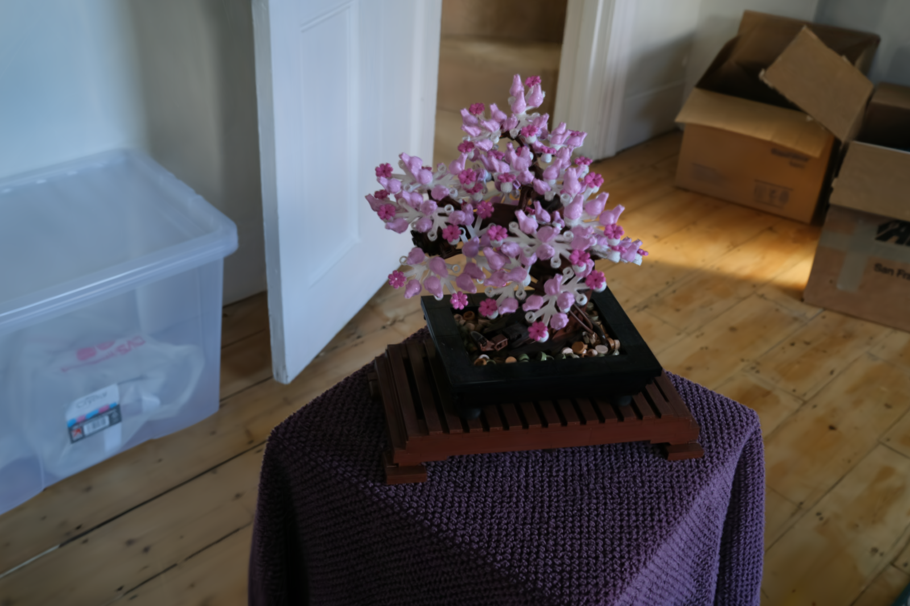
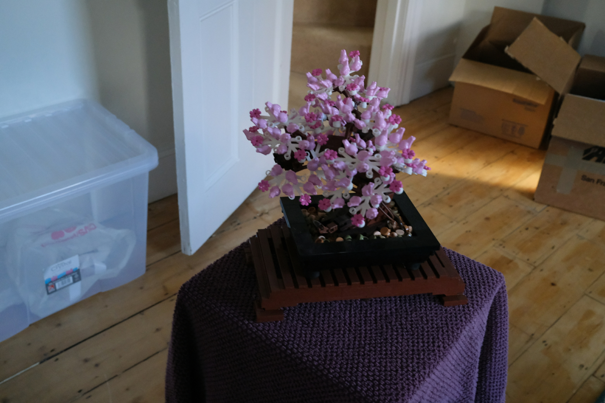

Recent works in volume rendering, \textit{e.g.}, Neural Radiance Field (NeRF) and 3D Gaussian Splatting (3DGS), have significantly advanced rendering quality and efficiency. However, existing Gaussian-based novel view synthesis methods typically follow a single-view optimization paradigm. We observed that this optimization paradigm suffers from unstable gradients, leading to suboptimal rendering quality. To tackle this issue, we present a novel multi-view regulated Gaussian Splatting (MVGS) that fully leverages a multi-view coherent (MVC) constraint throughout the optimization process. Specifically, our proposed MVC enhances 3D Gaussian multi-view consistency and thus ensures smoother gradient updates. Furthermore, single-scale training usually leads to suboptimal solutions. To further improve the convergence of multi-view optimization in 3DGS, we propose a cross-intrinsic guidance scheme in a coarse-to-fine manner. In particular, by incorporating more multi-view images at the low resolution, we can optimize 3D Gaussians with a more comprehensive perspective. Then, finer-scale Gaussians are initialized by coarsely estimated ones instead of optimizing full-scale 3D Gaussians from scratch. Moreover, we found that 3D Gaussians usually struggle to fit 2D training views with minimal overlap. Thus, we propose a novel multi-view cross-ray densification strategy, where 3D Gaussians are dynamically split to accommodate drastic viewpoint variations in the multi-view optimization process. In this way, the multi-view consistency can be further improved. Notably, our proposed MVGS method is a plug-and-play optimizer. Extensive experiments across various tasks demonstrate that our MVGS method not only achieves state-of-the-art performance but also improves 1 dB PSNR for existing Gaussian-based methods.

Pipeline of MVGS. We propose to incorporate multiple training views per training iteration by multi-view regulated learning. It forces the whole 3D Gaussians to learn the structure and appearance of multiple views jointly without suffering overfitting issues met in learning from a single view. It enables 3DGS to be constrained to the whole scene and less overfitting to certain views. To incorporate more multi-view information, we propose a cross-intrinsic guidance strategy to optimize 3DGS from low resolution to high resolution. The low-resolution training allows plenty of multi-view information as a powerful constraint to build more compact 3D Gaussians. It also conveys learned scene structure for high-resolution training to sculpt finer detail. To foster the learning of multi-view information, we further propose a cross-ray densification strategy, utilizing the ray marching technology with the guidance of the 2D loss maps to guide densification. The 3D Gaussians in overlapped 3D regions of cross rays would be densified to improve reconstruction performance for these views since these 3D Gaussians jointly serve and play an important role in the rendering of these views. In addition, we propose a multi-view augmented densification strategy when discrepancies between perspectives are significant. This approach encourages 3D Gaussians to densify more primitives, enabling better fitting across various perspectives and improving overall NVS performance.
Here, we present the qualitative comparison results of 3DGS, MVGS (Ours), and Ground Truth.


